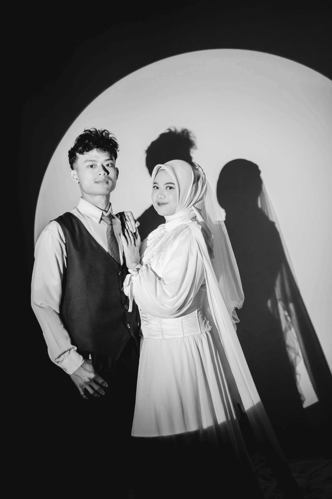
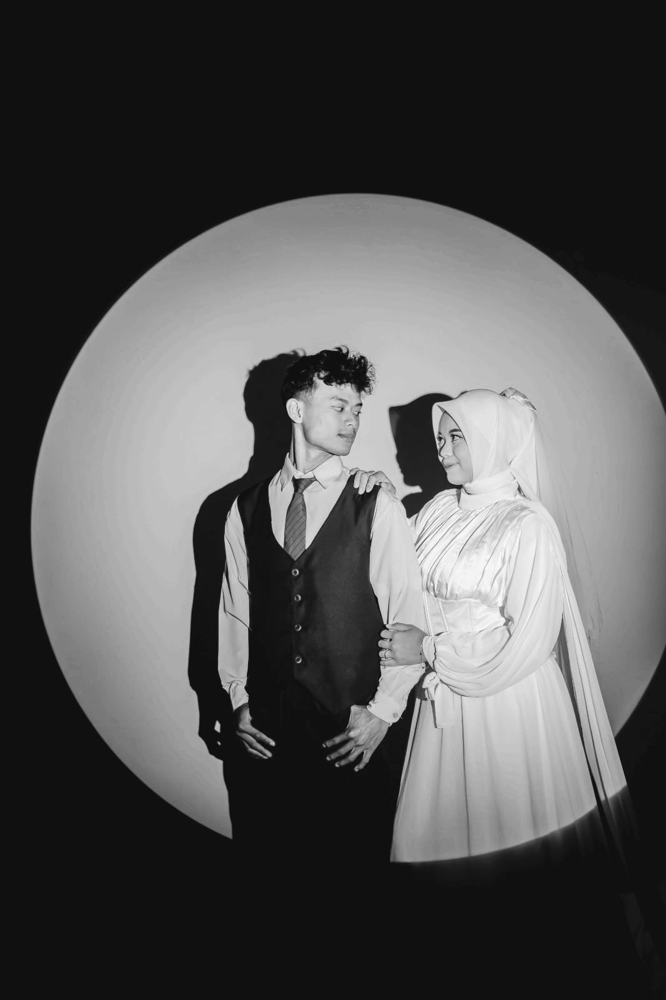

Undangan Pernikahan
Rizky & Dinda
"Dan di antara tanda-tanda kekuasaan-Nya ialah Dia menciptakan untukmu isteri-isteri dari jenismu sendiri, supaya kamu cenderung dan merasa tenteram kepadanya, dan dijadikan-Nya di antaramu rasa kasih dan sayang." (QS. Ar-Rum: 21)
Galeri Cinta Kami




Turut Mengundang
Rekan & Grup
Keluarga & Kerabat Jakarta
Sahabat & Teman
Pemerintah Desa & Keluarga Besar
Beserta seluruh keluarga, kerabat, sahabat, dan handai taulan yang tidak dapat disebutkan satu per satu
Hitungan Mundur Menuju Hari Bahagia
Minggu, 12 April 2026
Detail Acara
Akad Nikah
09.00 - Selesai
Minggu, 12 April 2026
Kp. Junti Girang RT.02 RW.10 Desa Banyusasri Kec.Katapang Kab.Bandung
Resepsi
09.00 - Selesai
Minggu, 12 April 2026
Kp. Junti Girang RT.03 RW.10 Desa Banyusari Kec.Katapang Kab.Bandung
Kirim Doa & Blessing
Jika Anda ingin memberikan kado, Anda dapat mengirimkannya melalui:
GOPAY
Nomor Rekening: 0881-5118-505
Atas Nama: Rizky Mahardika
Doa dan restu Anda adalah hadiah terindah bagi kami. Terima kasih atas kebahagiaan yang Anda turunkan untuk kami.
Lokasi Acara
Alamat Lengkap
Kediaman Dinda Dwi Agustin
Jl. Junti Girang No.131, Bojongkunci, Kec. Pameungpeuk, Kabupaten Bandung, Jawa Barat 40376
Titik Lokasi: Seberang Pisang Ijo Mbak Nuniek (Gedung putih dengan spanduk hijau)
Ucapan & Doa
Berikan ucapan dan doa terbaik untuk kami
Terima Kasih
Atas kehadiran, doa, dan restu yang diberikan kepada kami. Semoga Allah SWT membalas semua kebaikan Anda.
Rizky & Dinda
Keluarga Besar
Bapak Edi Setiawan & Ibu Lina dan Bapak Sobar & Ibu Dewi Sarimanah |Desain By Rizky Mahardika
Ucapan Terbaru
Ucapan akan dikirim ke sistem tamu.